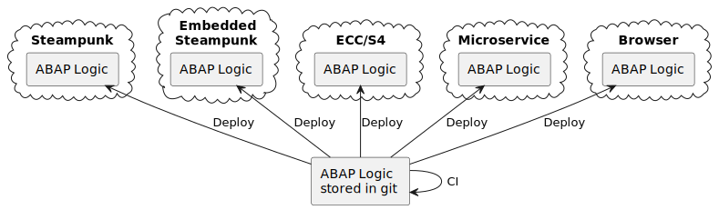

ABAP & DevOps: Doing Everything WrongLars Hvam Petersen, Heliconia Labs |
@LarsHvam
Heliconia Labs
Disclaimer
getting started
exercism!Exercism
ABAP track official launch April 1st 2022Solve coding exercises and get mentored to gain true fluency in your chosen programming languages. Exercism is open-source and not-for-profit.
https://exercism.org
5300+ students in 8 months, TDD, Mentoring
What is Devops?
img, lots of bicyclesWhat is Continuous Integration
Continuous integration (CI) describes a software development process, in which various team members integrate their contributions frequently into a single main line. Before each integration, the changes are verified through builds and automated testing. Thereby, you can detect errors as quickly as possible and prevent integration problems before completing the development.ref
What is Continuous Integration
- Use Version Control
- Automate the Build
- Run Tests in the Build
- Commit Early and Often
- Build Each Change
- Fix Errors Immediately
- Keep the Build Fast
- Test in a Production Environment Clone
- Provide the Latest Build Results
- Make the Build Process Transparent
- Automate the Deployment
Use Version Control
Automate the Build
Run Tests in the Build
Commit Early and Often
Build Each Change
Fix Errors Immediately
Keep the Build Fast
Test in a Production Environment Clone
Provide the Latest Build Results
Make the Build Process Transparent
Automate the Deployment
Quality Assurance
- Static analysis => abaplint
- But unit tests?
- Untrusted sources
- Zero budget

Multi target ABAP
All da links
#ABAPisNotDead
https://larshp.github.io/emea2023/@LarsHvam